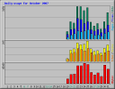

Case study: Flying Pickle
Blogs are re-defining the old media, but only a few attract a following. This case study demonstrates how a locally-focused blog attracted a following, advertisers and turned itself into a print publication.
The blog
FlyingPickle.co.nz was set up as a community blog by a small group of residents. The aim of the blog was to give the community a voice without the editorial bias of the local newspaper.
The project was envisaged as a not-for-profit community effort with minimal amount of advertising to cover the costs.
Anyone living, working or just being connected to the area could join the blog and contribute some content, be it an announcement, garage sale ad, news or opinion.
The tools
Blogging platform: WordPress
Publishing platform: ZetaPrints
WordPress theme: WP Themes Free
Theme customization: Zack Design
Hosting: Host I Can
Setting up cost: US$200
Monthly cost: $7 (hosting)
Setting up was a very easy process, but did take a few iterations of trying different WordPress plugins to get the site right.
The print edition
Coming out in print was the key to the success of the project. There are literally millions of blogs, but only a few get any readership. Trying to attract the local population to your blog may be a very difficult task. Trying to make them participate is even harder.
Flying Pickle used ZetaPrints web-to-print software to produce a print edition and take advertising.
The most popular posts and comments were selected on Wednesday night, cut and pasted into the layout of an A5 flyer, printed on Thursday morning by a local printer and distributed to approximately 2,300 letterboxes in the community by end of the day. Most people would pick it up on their return from work. Initially the distribution was done by supporters and volunteers, but was changed to paid distributors later on.
Demographics
The print edition was limited to 3 suburbs on the outskirts of Wellington, New Zealand. with approximate population of 6,500 people: Korokoro, Maungaraki and Normandale. These are peaceful, sleepy, middle class suburbs with a handful of local shops, 3 schools, 3 kindys, reasonable broadband penetration, a good deal of home-based businesses and a local arts gallery. Every suburb has it’s own official monthly newsletter. 2 free weekly newspapers had much much larger coverage.
Blog popularity and traffic
At first, the website was advertised on community noticeboards and in several shop windows. It scored several hundred hits from curious locals. The first print edition resulted in a surge of traffic, posts and comments from the residents.
NOTE: The figures below are for 3 months only.


Users registered: 126
Users posted: 105
Comments posted: 293
Total population: ~6,500
Participation rate: 6% of the total local population
Pages served: ~11,000 per month
| Summary by Month | ||||||||||
|---|---|---|---|---|---|---|---|---|---|---|
| Month | Daily Avg | Monthly Totals | ||||||||
| Hits | Files | Pages | Visits | Sites | KBytes | Visits | Pages | Files | Hits | |
| Dec 2007 | 992 | 613 | 384 | 110 | 1155 | 437190 | 3440 | 11908 | 19012 | 30775 |
| Nov 2007 | 1381 | 833 | 473 | 121 | 1238 | 668056 | 3648 | 14200 | 25010 | 41433 |
| Oct 2007 | 1978 | 1162 | 550 | 131 | 709 | 372212 | 1709 | 7160 | 15114 | 25716 |
| Totals | 2375035 | 19237 | 62605 | 101876 | 165159 | |||||
We believe it is an astonishing result for a tiny hyper-local blog launched by people without any special status in the community. Such outcome with sustained traffic would not be possible without support of the print edition.
Recognition in the community
There were several positive indicators to state that the publication was well respected:
- no shortage of volunteers to deliver a hundred or so copies to their street
- many residents were taking the copy into their hands, rather than waiting for it to land in the letterbox with all the other junk mail
- deliverers always asked residents if they wanted a copy – very few said “no”
- other local publications started printing the content from the website
- advertisers were happy to place their ads in there
Lessons and challenges
We identified a number of difficulties facing any similar project.
- Starting a commercial publication may not get such a wide support FlyingPickle enjoyed due to its not-for-profit status.
- Editorial policies should be liberal enough to foster an open discussion and variety of opinions.
- Be prepared to hostile behavior by those disagreeing with the content.
- Preparing advertising takes a lot of time and effort, often making it uneconomical, unless the process is automated.
- Preparing print-ready files requires special tools, knowledge and time, unless the process is automated.
- Gaining trust and recognition in the community is critical to attracting local advertisers.
- Active news gathering brings the publication to a completely new quality level.
None of these challenges are too hard to overcome. We have to note, though, that projects of this type need to find their own niche to succeed, be it a topical publication posted to certain type of professionals or just a community blog like Flying Pickle.
ZetaPrints assisted the project in two key areas: advertising and print layout work.
Conclusion
FlyingPickle experiment proved it is entirely possible for a blogger to produce a regular print edition and attract advertising as a commercial venture. One of the strengths of the approach was to minimize the pre-press effort needed to prepare the print edition and adverts. Use of ZetaPrints technology made it possible for the whole project to be run by one person as a part-time activity.
Read out Blogpaper Manual to get started.


{kind=link}